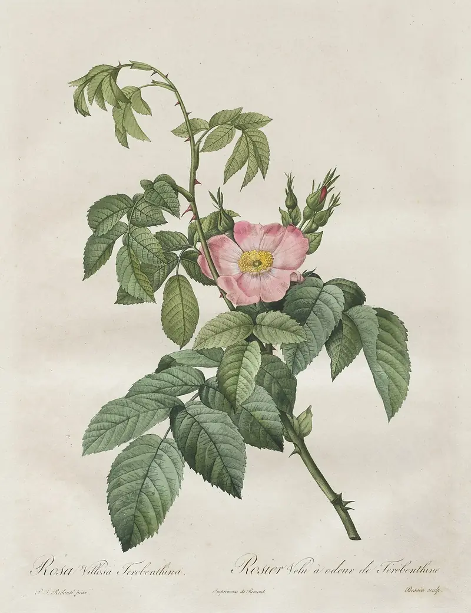

Texte
Gedichte und Gedankenspiele von Ingrid Timpel: Verse aus dem Garten und Gedanken, die man weiterdenken kann.

Gedichte
Ingrid Timpels Verse, jedes mit einer Pflanze aus dem Garten der alten Bücher.
Gefunden
Ich ging im Walde
So für mich hin,
Und nichts zu suchen,
Das war mein Sinn.
Im Schatten sah ich
Ein Blümchen stehn,
Wie Sterne leuchtend,
Wie Äuglein schön.
Ich wollt es brechen,
Da sagt’ es fein:
Soll ich zum Welken
Gebrochen sein?
Ich grub’s mit allen
Den Würzlein aus,
Zum Garten trug ich’s
Am hübschen Haus.
Und pflanzt es wieder
Am stillen Ort;
Nun zweigt es immer
Und blüht so fort.
Johann Wolfgang von Goethe, 1813
Satzprobe Dieses Gedicht zeigt, wie Ihre Verse gesetzt werden. Bitte löschen Sie es im Editor, sobald Ihr erstes Gedicht da ist.
Mondnacht
Es war, als hätt’ der Himmel
Die Erde still geküßt,
Daß sie im Blütenschimmer
Von ihm nun träumen müßt’.
Die Luft ging durch die Felder,
Die Ähren wogten sacht,
Es rauschten leis die Wälder,
So sternklar war die Nacht.
Und meine Seele spannte
Weit ihre Flügel aus,
Flog durch die stillen Lande,
Als flöge sie nach Haus.
Joseph von Eichendorff, 1837
Satzprobe Dieses Gedicht zeigt, wie Ihre Verse gesetzt werden. Bitte löschen Sie es im Editor, sobald Ihr erstes Gedicht da ist.

Gedankenspiele
Kurze Gedanken, aufgeschrieben, wenn sie kommen. Manche sind eine Frage, manche eine Antwort.
Satzprobe Die Sätze von Goethe zeigen, wie Ihre Gedankenspiele gesetzt werden. Bitte löschen Sie sie im Editor, sobald Ihre eigenen da sind.
Edel sei der Mensch, hilfreich und gut!
Wer fremde Sprachen nicht kennt, weiß nichts von seiner eigenen.
Es ist nicht genug zu wissen, man muß auch anwenden; es ist nicht genug zu wollen, man muß auch tun.